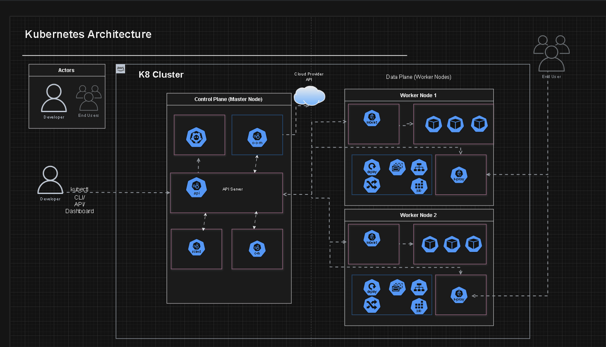

Kubernetes
Kubernetes is designed with a robust and scalable infrastructure to efficiently manage containerized applications. It automates deployment, scaling, and operations, ensuring reliability and high performance in dynamic environments.
How we used Kubernetes in our projects
In our projects, Kubernetes serves as the backbone for deploying, scaling, and managing containerized applications. By leveraging its robust orchestration capabilities, we ensure that our applications are highly available, resilient, and able to handle varying loads seamlessly.
Key Features
Some of the key features of Kubernetes include:
- Automated rollouts and rollbacks
- Service discovery and load balancing
- Storage orchestration
- Self-healing capabilities
- Secret and configuration management

Kubernetes Architecture
Kubernetes architecture is based on a master-slave model, where the master node controls and manages a set of worker nodes. Key components include the API server, etcd (a key-value store), scheduler, and controller manager on the master node, and kubelet, kube-proxy, and container runtime on the worker nodes.
Practical Examples
Here are some practical examples demonstrating Kubernetes functionalities:
Deploying a Simple Application
This example demonstrates the process of deploying a simple application using Kubernetes.

Scaling an Application
This example shows how to scale an application to handle more traffic.

Self-Healing Applications
See Kubernetes' self-healing capabilities in action as it automatically restarts failed containers.